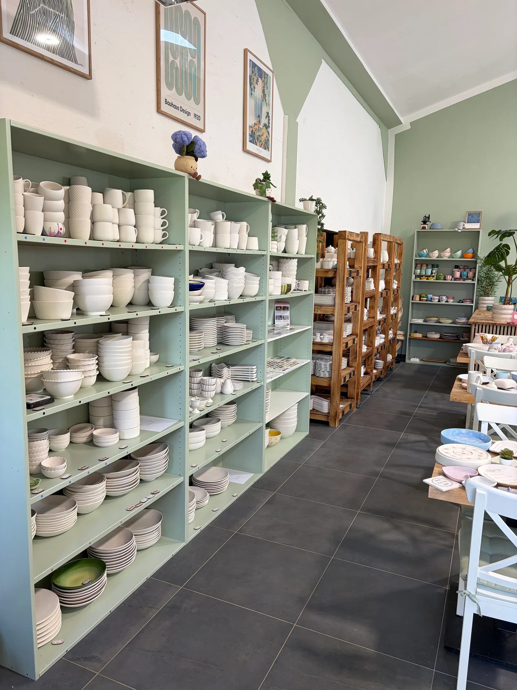

Forme dein eigenes Stück Glück
In unserer hellen, großzügigen Töpferwerkstatt in Schechen stehen dir moderne elektrische Drehscheiben, professionelle Arbeitsplätze für Handbuilding und zwei hauseigene Brennöfen zur Verfügung.
Ob intensiver Anfängerkurs mit Schritt-für-Schritt-Anleitung oder flexible, selbständige Werkstattnutzung mit individuellem Nuki-Zugangscode – bei uns findest du die passende Umgebung für deine Ton-Projekte.

Drehscheiben-Kurs (2,5 Std.)
Kompakter Intensivkurs mit Begleitung
- Eigene elektrische Drehscheibe für jeden Teilnehmer
- Professionelle Anleitung: Zentrieren, Aufbrechen, Hochziehen & Formen
- Gestaltung von 2–4 eigenen Gefäßen (Tassen, Schälchen, Vasen)
- Schrühbrand und anschließender Hochbrand durch uns
- Kleine Gruppen für maximale individuelle Betreuung
- Unterricht auf Deutsch oder Englisch
Handbuilding (Aufbautechnik)
Freies Formen ohne Drehscheibe
- Plattentechnik, Wulsttechnik und Daumendruck-Technik
- Ideal für Schalen, Tassen mit Henkel, Dekoobjekte und Pflanztöpfe
- Sehr entspannt und meditativ – kein Zentrier-Stress
- Verzierung mit Stempeln, Texturen und Ritzmustern
- Inklusive Brennen und transparenter oder farbiger Glasur
Freies Töpfern (24/7 Nuki)
Für geübte Töpferinnen & Töpfer
- Persönlicher digitaler Zugangscode per Nuki-App/Code
- Werkstatt rund um die Uhr nach deinem Zeitplan nutzen
- Voller Zugriff auf Scheiben, Werkzeuge, Gipsformen und Glasierplätze
- Brennservice vor Ort: Schrühbrand 6 €/kg, Hochbrand 8 €/kg
- Komplette Ofenmiete (130L Ofen): 70–80 €
Unser externer Brennservice
Du töpferst gerne zu Hause und hast keinen eigenen Brennofen? Bring deine luftgetrockneten Stücke gerne zu uns nach Schechen zum Brennen:
Bitte teile uns bei Abgabe den genauen Ton-Hersteller und die maximale Brenntemperatur mit. Bei Fragen melde dich gerne per E-Mail oder WhatsApp bei uns.